Full-game room gallery
Play the game / Verification and limits
Photoreal art covers all 14 recovered layouts. Collision footprints and door records are recovered; elevations, volumes and appearances are interpretations. These browser captures use controlled state to show the artwork and charged meters.
New photoreal splashFresh game / Photoreal Isometric default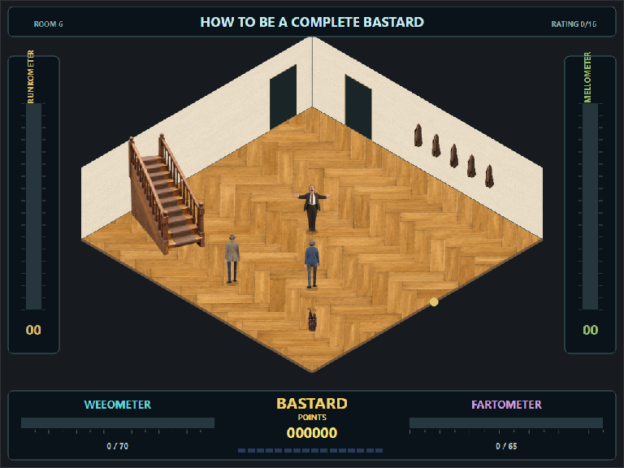
Meter check / actual World values in a controlled fixture Original and modern HUD arrangement
Original WEEOMETER / FARTOMETER / side gauges and central print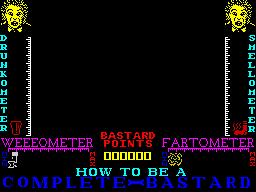
Restored arrangement in Isometric All fourteen rooms
Room 1 / Greenhouse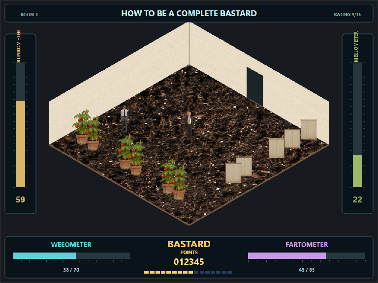
Room 2 / Garden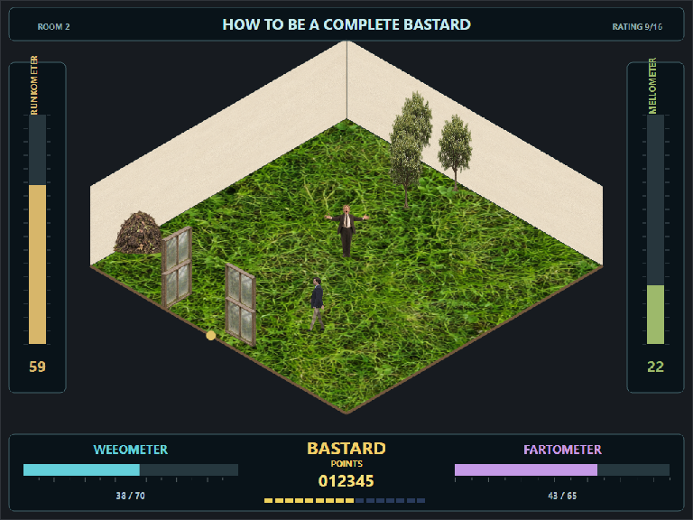
Room 3 / Patio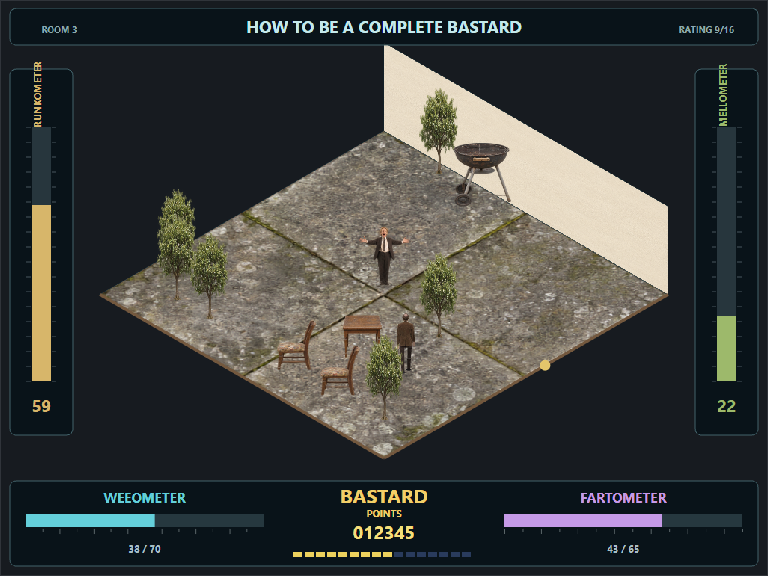
Room 4 / Kitchen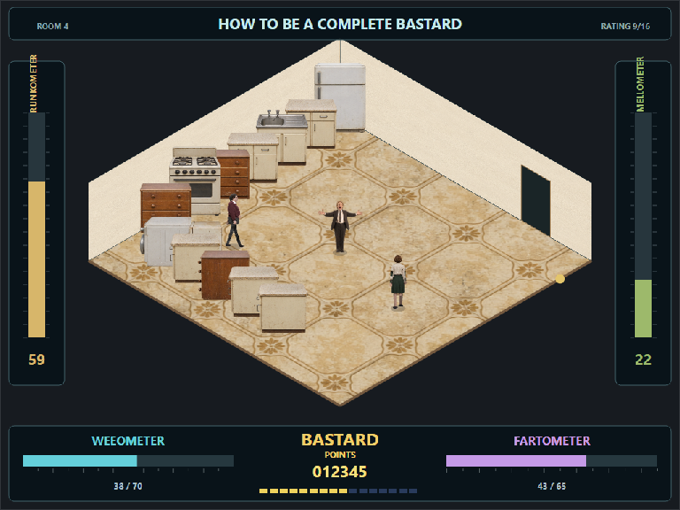
Room 5 / Dining room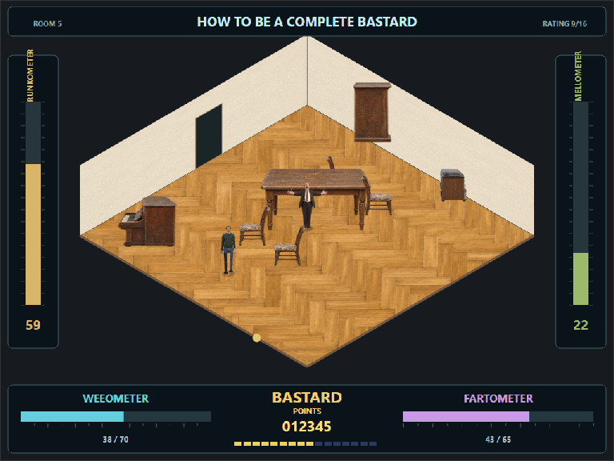
Room 6 / Hallway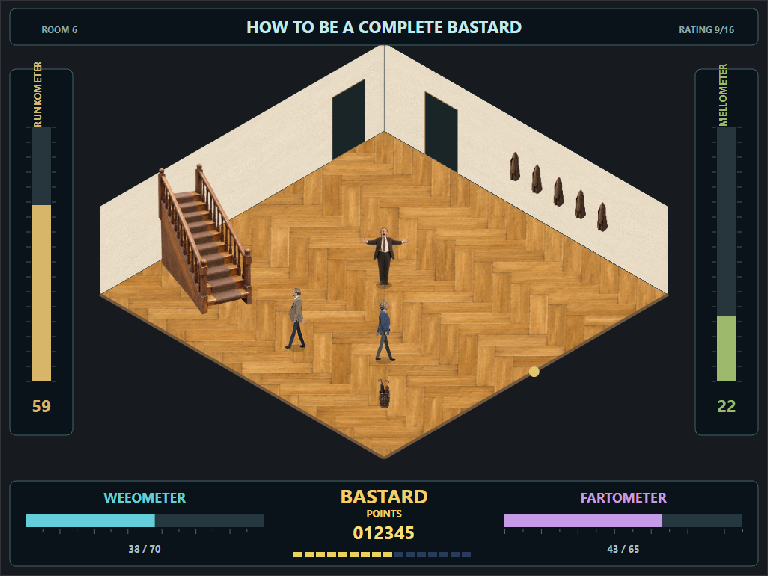
Room 7 / Lounge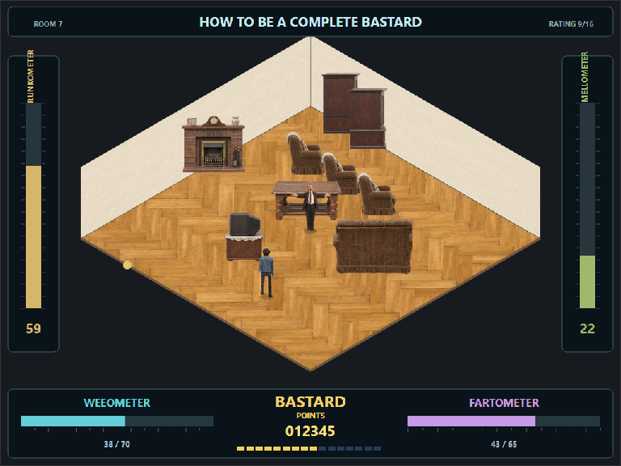
Room 8 / Garage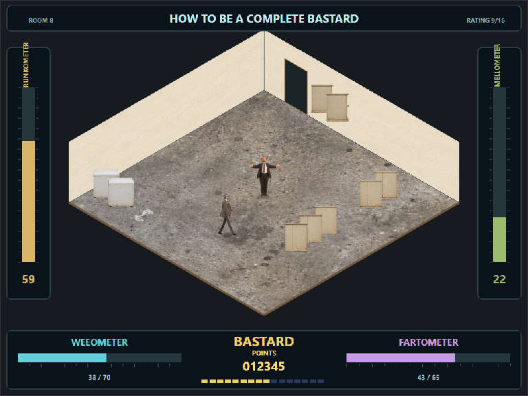
Room 9 / Rear garden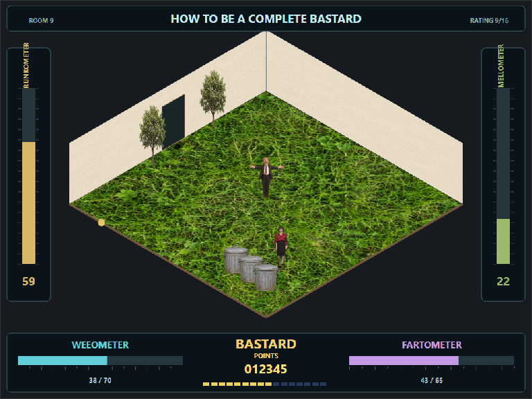
Room 10 / Bathroom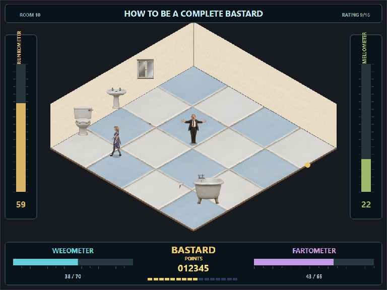
Room 11 / Bedroom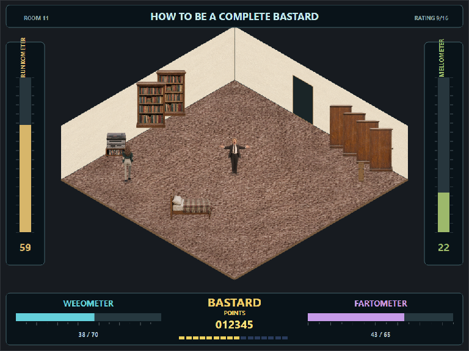
Room 12 / Upstairs landing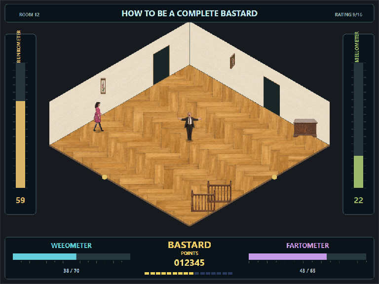
Room 13 / Main bedroom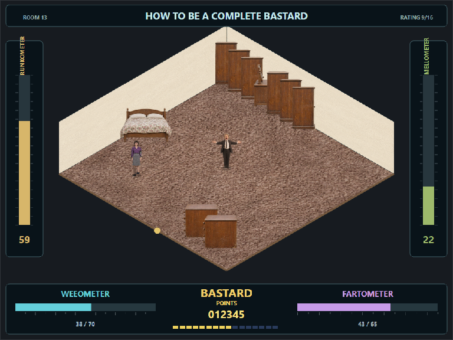
Room 14 / Twin bedroom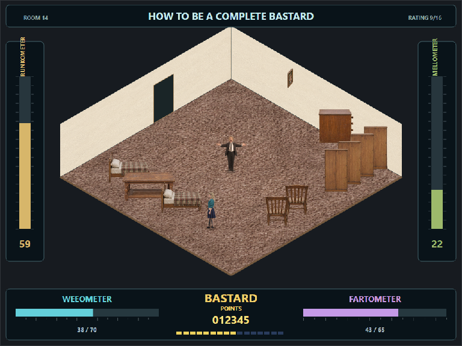
Actual winning flow
A controlled sequence of sixteen eligible guest actions reaches the recovered winning rating and final cat reveal. This is a flow test, not a claim of an unassisted whole-game playthrough.
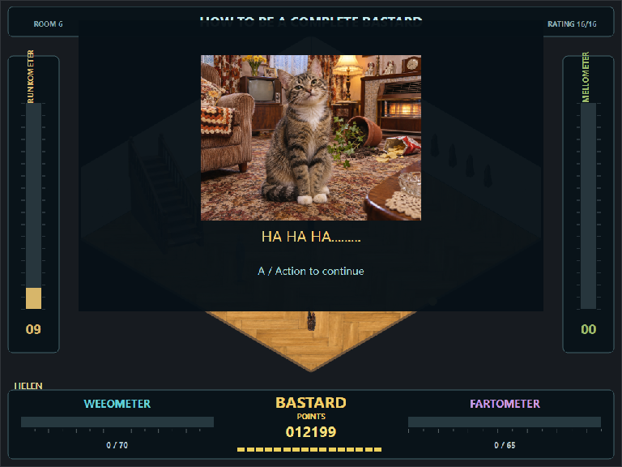